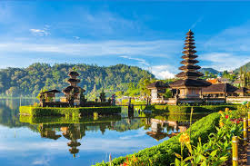
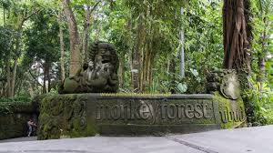

Home
Selamat,
Bali Jadi Salah Satu Destinasi Wisata
Terbaik Dunia Pilihan Wisatawan

Pesona Bali sebagai destinasi wisata dunia masih kuat.
Terbukti, Pulau Dewata itu menempati posisi empat besar
dari daftar
25 destinasi wisata terbaik dunia versi TripAdvisor.
Laman travel planning dan booking itu mendeskripsikan
Bali ibarat kartu pos yang hidup.
Juga, Bali disebut sebagai surga
Indonesia yang membuat penghuninya
merasa tinggal di dunia fantasi.
Daya tarik utama Bali
adalah kawasan kaya sinar matahari
yang dikelilingi oleh pantai-pantai berpasir putih.
Sementara di bawah laut, para turis bisa menemui spesies-spesie
tropis dan koral cantik hingga bangkai kapal perang dunia ke-2.
TripAdvisor juga menyebut salah satu spot
wisata di Bali secara spesifik.
Adalah Ubud, disebut sebagai ibu kota seni
yang menjadi tempat sempurna untuk menikmati
pertunjukan tari tradisional, workshop membatik atau membuat
kerajinan perak, hingga menenangkan pikiran dan tubuh
lewat kelas yoga.
Sementara, posisi tiga besar dikuasai oleh
destinasi di Eropa. Secara berturut-turut,
di posisi pertama hingga ketiga diduduki oleh London (Inggris),
Paris (Prancis), dan Crete (Yunani).
Menteri Pariwisata dan Ekonomi Kreatif/Kepala
Badan Pariwisata dan Ekonomi Kreatif (Menparekraf)
Wishnutama Kusubandio menyambut baik ditetapkannya
Bali sebagai salah satu destinasi terbaik dunia versi TripAdvisor.
Ia berharap penetapan itu semakin memotivasi Indonesia
untuk bisa menumbuhkan Bali-Bali baru,
serta meningkatkan pariwisata Bali agar
semakin ramah dan berkelanjutan.
Terlebih di tengah pandemi COVID 19 ini,
kata Wishnutama, dunia pariwisata Bali telah
dibuka secara bertahap mulai dari 9 Juli 2020
untuk lokal, 31 Juli 2020 untuk wisatawan nusantara,
dan rencananya September 2020 akan dibuka bagi
wisatawan mancanegara.
"Diharapkan setelah dibuka,
penerapan protokol kesehatan dapat tetap dijalankan dengan disiplin.
Jangan sampai setelah dibuka timbul gelombang kedua COVID-19
hal itu yang harus dihindarkan, lantaran pariwisata itu adalah
bisnis kepercayaan," ujarnya, dalam rilis yang diterima Liputan6.com.
Sejarah
Sejarah Pulau Bali
Pulau Bali kuno telah dihuni oleh bangsa
Austronesian sekitar 2000 tahun sebelum masehi.
Yang bermigrasi dan berasal dari Taiwan melalui
Maritime Asia Tenggara.
Budaya dan bahasa dari orang
Bali demikian erat kaitannya
dengan orang-orang dari kepulauan
Indonesia, Malaysia, Filipina, dan Oseania.
Penemuan purbakala seperti Alat-alat
batu yang berasal zaman Austronesia
telah ditemukan di dekat desa Cekik
di sebelah barat pulau Bali.
Masa Bali kuno terdapat sembilan
sekte Hindu yaitu Pasupata,
Bhairawa, Siwa Shidanta, Waisnawa,
Bodha, Brahma, Resi, Sora dan Ganapatya.
Setiap sekte menghormati dewa tertentu
sebagai Ketuhanan pribadinya.
Budaya Bali sangat dipengaruhi oleh budaya India,
Cina, dan khususnya Hindu.
Budaya tersebut dimulai sekitar abad 1 Masehi.
Nama Bali Dwipa (“Pulau Bali”) telah
ditemukan dari berbagai prasasti, termasuk
pilar prasasti Blanjong yang ditulis oleh
Sri Kesari Warmadewa pada tahun 914 masehi
yang menyebutkan “Walidwipa”.
Pada masa itu sistem irigasi
Subak yang kompleks sudah dikembangkan
untuk menanam padi.
Beberapa tradisi keagamaan
dan budaya masih ada sampai saat ini dan dapat
ditelusuri kembali saat anda ke bali
(Informasi Umum Tentang Bali).
Kerajaan Hindu Majapahit (1293-1520 Masehi)
di Jawa Timur mendirikan sebuah koloni di Bali pada tahun 1343.
Pada abad ke-15 Masehi ketika kerajaan Majapahit
dikalahkan oleh kekuatan kerajaan Islam Demak,
ada eksodus besar-besaran orang Jawa-Hindu dari
intelektual, seniman, pendeta, dan musisi dari
pulau Jawa ke pulau Bali.
Geografi
Secara topologi pulau Bali terbentang
pegunungan dari barat pulau hingga ke timur.
Diapit antara pulau Jawa di-bagian barat dan
pulau Lombok bagian timur.
Diantara pegunungan tersebut
terdapat sejumlah gunung berapi
active dan tidak seperti:
Gunung Agung tinggi 3.142 meter.
Gunung Batur tinggi 1.717 meter dari permukaan laut.
Gunung Abang tinggi 2.276 meter.
Gunung Batukaru tinggi 2.276 meter.
Dalam Informasi Umum Tentang Bali ini,
pulau para dewata ini dibelah oleh sungai,
kanal, dan juga ngarai yang diselimuti hutan.
Lembah dan bukitnya diwarnai oleh hamparan hijau padi,
ujung pantai-pantainya yang indah serta
danau-danau yang mengisi sisa kawah.
Bali memiliki 4 (empat) buah danau
yang berlokasi di tengah pulau kawasan pegunungan yaitu:
Danau Beratan / Danau Bedugul
Danau Buyan.
Danau Tamblingan.
Dan Danau Batur.
Wisata
Ubud
Kota Ubud, terletak di bagian tengah pulau Bali,
Indonesia, dikenal sebagai pusat tarian dan kerajinan tradisional.
Hutan hujan dan terasering padi yang mengelilingi kawasan Ubud,
ditambah pura dan tempat pemujaan,
merupakan salah satu lanskap Bali yang paling terkenal.
Terdapat situs suci kuno, yaitu Goa Gajah yang memiliki ukiran
serba mendetail dan Gunung Kawi,
yaitu tempat pemujaan yang diukir dari batu.
Berikut ini bali tour merangkum wisata di Ubud,
seperti berikut ini :
Monkey Fores Ubud

Daya tarik monkey forest Ubud sebagai tempat liburan,
terletak pada hutan
lindung yang masih asri dan didalam hutan
banyak terdapat kera.
Di dalam area hutan juga
terdapat pura Hindu yang diberi nama
Pura Dalem Agung Padangtegal Ubud.
Kera-kera yang ada disini sudah jinak.
Namun, bukan berarti mereka tidak pernah
menggangu pengunjung.
Ada beberapa adat istiadat
dan larangan saat harus
kamu patuhi saat masuk ke area hutan ini.
Kamu dapat mengunjungi
tempat ini di Jalan Monkey Forest, Ubud.
Perlu diingat,
tempat wisata buka dari jam 08.30-17.30 WITA.
Kamu akan dikenai biaya masuk sebesar Rp 50.000
untuk dewasa dan Rp 40.000 untuk anak 3-12 tahun.